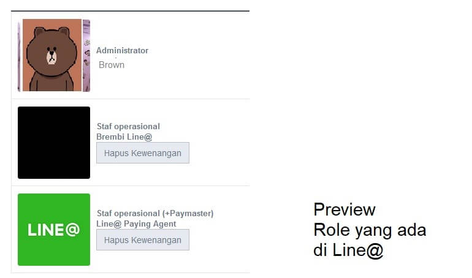

Aplikasi Line@ mempunyai fitur hingga dapat dikelola oleh 100 Admin atau bisa dibilang 100 akun Line yang berbeda. Yup 100 orang login secara bersamaan di 100 device yang berbeda dengan menggunakan 1 Akun Line@ akun yang sama dapat dilakukan. Seperti halnya Aplikasi sharing yang lain, di Line@ juga diatur mengenai role atau permission.
Dalam Line@ ada beberapa tipe Admin atau member yakni:
Sesuai dengan Judulnya, Admin dapat mengakses semua fitur di akun Line@ . Yang membuat Role ini sangat powerfull adalah hanya Admin yang mempunyai menu “Manage Members” atau “Kelola Anggota”. Fitur yang dapat menambah atau mendelete member ini hanya dimiliki oleh Administrator. Akun LINE yang pertamakali membuat akun line@ tersebut sudah otomatis menjadi Administrator akun Line@ tersebut.
Member atau Staf Personal adalah Role dalam akun line@ yang tidak memiliki menu “Manage Member” atau “Kelola Anggota”. Member dapat membalas chat,melihat statistik,melakukan broadcast,membuat Rich Message dan fitur-fitur lainnya. Member hanya tidak dapat mengakses menu “Manage Member” dan Menu “Business Store”.
Paymaster disini adalah Role ganda yang dapat dimiliki oleh Administrator ataupun Member. Ketika anda mengatur Paymaster, Hanya Role tersebut yang dapat mengakses “Menu Business Store” di Android atau “Usage Conditions” di IOS. Menu ini digunakan untuk melakukan pembayaran Monthly Plan ataupun Premium ID Line@
Lalu bagaimana mengatur keanggotan di Line@?
Anda dapat mengaturnya di Applikasi Line@ di smartphone anda ataupun di versi dekstop (http://admin-official.line.me/). Namun ada perbedaan jika mengaturnya di Aplikasi dan di Web Desktop. Jika anda melakukan pengaturan di Aplikasi ,anda hanya dapat mengatur “Member” dan “Paymaster” saja. Sedangkan bila anda ingin menambahkan Administrator di akun Line@ anda (ataupun mengganti Administrator) harus dilakukan di Web Desktop (http://admin-official.line.me/)
Cara Menambahkan Akun Administrator via Dekstop PC
Seteleh Mengklik menu “Kelola Otorisasi Pengguna” atau “Manage user Authorization” anda dapat membuat Link untuk mengundang Admin Baru. Sistem versi dekstop ini sedikit berbeda dengan pengatur manage member via Applikasi, Cara menjadikan Admin ataupun membernya adalah Anda men-generate Link di menu dulu di web lalu memberikan Link tersebut ke Akun LINE yang ingin menjadi Administrator.
Copy saja Link yang digenerate tersebut ke kolom chat di Applikasi Line, lalu dari sisi Akun Line atau orang yang ingin menjadi Admin akun line@ tinggal simple klik link tersebut. Bila sudah berhasil, user yang mengklik tersebut dapat login applikasi line@ dengan ID personal-nya untuk meng-akses akun line@ anda.
Notes: Link tidak akan berguna jika yang mengklik link tersebut ternyata sudah menjadi member Akun Line@ tersebut. Contoh Ilustrasi:
Akun Line@ “@SemogaAwet” dibuat oleh user line “A”, dan memiliki member si “B” dan si “C”. Si A lalu ingin menjadikan si “B” sebagai Administrator. Lalu si “A” mengenerate link Administartor dari webstie, “B” pun mengklik link tersebut tapi tidak terjadi apa-apa. Hal ini terjadi karena si “B” sudah menjadi member di akun Line@ tersebut. Lalu si “A” mengenerate lagi link untuk Administrator dan diberikannya pada si “D” yang memang belum menjadi anggota di Akun line@ “@SemogaAwet” ini. Dan ternyata berhasil, sekarang akun Akun Line@ “SemogaAwet” memiliki 2 Admin si “A” dan si “D”.
Jika si “A” ingin tetap menjadikan si “B” sebagai Admin, maka Ia harus mendelete dulu si “B” dari keanggotaan Line@ , lalu mengenerate ulang link invite Administrator. Barulah si “B” dapat menjadi Administrator akun line@ tersebut